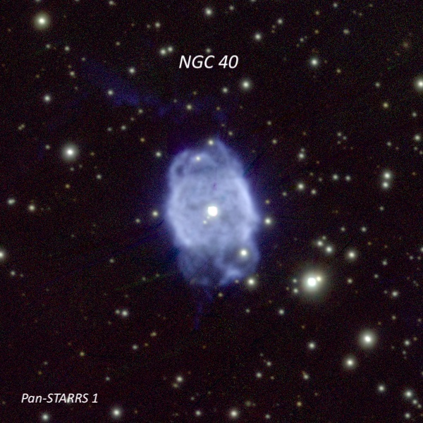
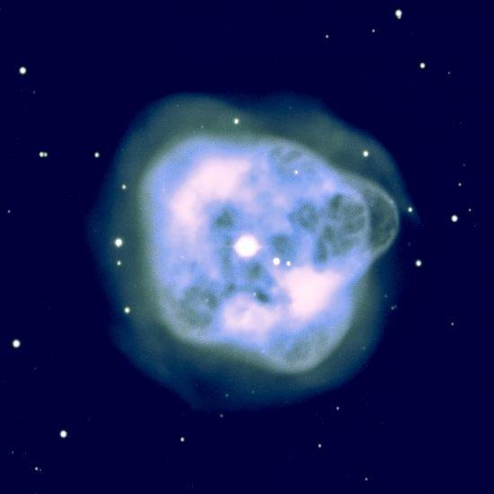
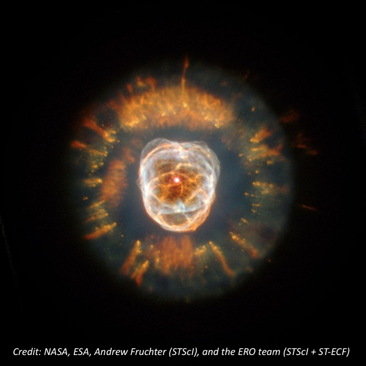
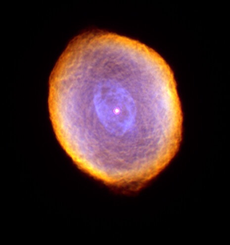
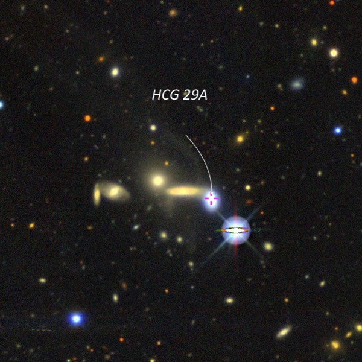
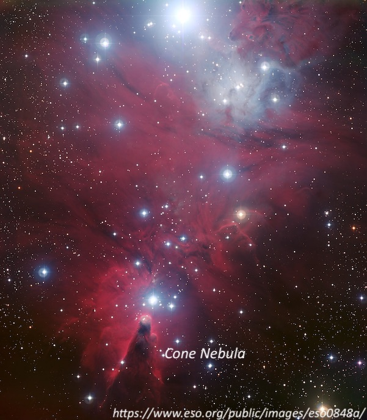

First trip to Lake Sonoma, Dec. 30, 1999
After debating where to observe on Thursday night, December 30, Jim Shields and I decided to give Lake Sonoma a try after reading several positive postings on TAC during the past year. Leaving at 3:00 PM, I was expecting about a 90-minute drive from Albany -- this turned out to be a bit optimistic as I hit quite a bit of afternoon traffic in pockets that slowed the drive north on highway 101. Still, it was a nearly straight shot and very easy to drive, especially since I was first considering the nausea-inducing Mines Road to San Antonio Valley. The 85-mile trip took two hours going and 80 minutes coming back after midnight. We arrived just after sunset and located a large, flat parking area about a half mile before the camping turnoff with wide-open horizons in all directions except for a few trees at the north end.
There were no other vehicles in the large lot and other than an occasional passing car along the road (Rockpile is its name), the conditions were very quiet, calm, dew-free and surprisingly dark! Except for a light dome SSE (perhaps 20° up) due to the towns lined up along 101, the transparency was excellent (near mag 6.5 in most parts of the sky) and the seeing easily permitted 500x as the evening wore on. The skies appeared darker than Hidden Hill Observatory (H2O) and similar to the Fiddletown site in most directions except SSE. When I drove home, we experienced pockets of ground fog and the East Bay and San Francisco were completely socked in. But the fog may have contributed to a darker than average evening at Lake Sonoma.
After quickly throwing my 17.5-inch truss-tube dobsonian together and munching on a sandwich the sky looked invitingly dark and it was only 6:30! I spent awhile on a few familiar bright planetary nebulae, experimenting with different magnifications and filter combinations to eke out as much detail as possible.
NGC 40
00 13 01.0 +72 31 19
Size 38" × 35", Magnitude 10.6V
At 100×, NGC 40 appeared (unfiltered) as a slightly elongated, moderately bright disc surrounding a bright mag 11.5 central star. A slightly fainter 12th magnitude star lies 1.0' SW. I targeted this object because of its unusually low excitation, with an OIII/H-beta ratio of only 0.4. In most PNe, this ratio runs from 10:1 to 20:1. This implies that on NGC 40, the OIII filter is not the best choice and as predicted it dimmed with a 2-inch OIII. But there was a noticeable enhancement using the H-beta filter.
At 220×, a star was intermittently visible at the SW edge and the PN was slightly elongated SSW-NNE. The UHC filter gave the best response at this power. The surface brightness appeared irregular — darker around the central star and slightly brighter along the west and east side of the rim. At 280×, the UHC filter gave the best response at this power., the faint star I had earlier noted was barely off the SW edge and PN was weakly annular with a brighter rim along the west and east side, with a darker center. The SW and NE ends of the halo were clearly weaker, though. Finally 380× provided a nice view with subtle irregularities in the interior.

NGC 1514
04 09 17.0 +30 46 33
Size 136" × 121", Magnitude 10.9V
Next up was NGC 1514 in Taurus. Again starting at 100× (20mm Nagler), this moderately bright PN displayed a round, 2' halo surrounding a prominent mag 9.5 star. This time there was an excellent response to UHC and OIII blinking and no response to the H-beta filter (the OIII/H-beta ratio is 12:1). Using the OIII filter, the surface brightness is noticeably uneven, with the NW quadrant of the rim clearly brighter. The SE side is also weakly enhanced while the center and ends of the minor axis are slightly darker. At 220× using a UHC filter, the halo appears nearly 2.5' in diameter. There is a small, darker "hole" surrounding the central star and the halo is clearly irregular with a brighter "knot" on the SE side, while the NW portion of the halo is brighter along the rim.

Back in 1980, I logged the beautiful double-shelled planetary NGC 1535 as “greenish”, but in several subsequent observations with 13.1" and 17.5" scopes it has appeared blue to me. Has anyone noticed a perceived color difference based on aperture (or possibly aging eyes?). This planetary nebula has a wonderful double-shell structure that was easily visible at 100× surrounding the bright central star. The views at both 380× and 500× were superb in the good seeing. The double shell envelope is very prominent with a bright inner ring ~20" diameter. The ring has a fairly sharp edge, and its embedded in a fainter roundish halo, roughly doubling the diameter. The inner shell is irregularly darker surrounding the central star (I've previously described this structure as “small dark gaps” in my observing notes).

The diminutive planetary, IC 418 in Lepus, has gained some notoriety lately because of reports of a unique reddish hue. I've noticed this coloration twice, but the effect is pretty subdued to my eyes. At 82×, the mag 10.5 central star was enveloped in a very small round halo which appeared to have a weak red tinge at its edge. Once again, this is a low-excitation planetary (OIII/H-beta = 1.2) and using a H-beta filter, the halo brightened while the central star dramatically faded, leaving a more noticeable disc. At 220×, the prominent central star was surrounded by a well-defined 10" halo that partially "blinked" on and off by switching from averted to direct vision. At 280×, the small halo is possibly surrounded by an extremely faint envelope, but this could not be confirmed. Increasing to 380× and 500× presented a superb view of the weakly annular inner disc.

I usually try to include an edge-on from the Flat Galaxy Catalogue (FGC) in my observing list (the "Integral Sign" galaxy was my January's "Off the Beaten Path" selection in Adventures in Deep Space (https://adventuresindeepspace.com/jan.htm). The FGC resulted from a systematic survey of the Palomar Observatory Sky Survey (POSS) of extreme edge-on galaxies at least 40" in diameter and a major:minor axis of 7:1 or greater.
This night I decided to take a look at UGC 2082 = FGC 317 located at 02 36 17.4 +25 25 20 in Aries. This galaxy has an integrated blue magnitude of 13.7, but with dimensions 5.4' × 0.8', the surface brightness is only 15.2, typical of low surface brightness UGC galaxies.
UGC 2082
02 36 17.4 +25 25 20
Size 5.4' × 0.8', Magnitude 13.0
At 100×, I picked up a ghostly streak, ~4' × 1' oriented NW-SE with little or no central concentration. This large, low surface brightness edge-one was difficult to view at 220×, although it could be held steadily with averted vision. At this power, it appeared ~4.0' × 0.8', and a very weak, broad concentration. A mag 10.5 star 4' NW is collinear with the major axis and there are several additional mag 10 stars in the field.
HCG 29A
04 34 43.3 -30 32 39
Size 0.3 '× 0.2', Magnitude14.1V
Perhaps the most challenging object of the evening was Hickson Compact Group (HCG) 29. This is a linear chain of four dim galaxies with a total length of only one arcminute! This challenging group is easy to locate. Just point to 4th-magnitude 52 Eridani (Upsilon 2), and look 11’ to the west. But nothing was visible at 100×. It finally took 280× and averted vision to record a marginal sighting of just HCG 29A, the brightest member. Even then it was only visible intermittently as a 10" knot just 20" NE of a mag 12.5 star. Several major galaxy catalogs, such as the UGC, MCG, and CGCG, don’t include this galaxy, so detecting this one member felt like an accomplishment. A number of the entries in the Hickson catalogue have members with anomalous redshifts (such as Stephan's Quintet). In this case, the three fainter members (blue magnitudes only 17.0-18.4) have redshifts over twice that of HCG 29A.

Most of the evening was spent picking off nondescript galaxies in Eridanus and northern Fornax, but viewing several galaxies in the same field always adds interest. During the 1880s, astronomer at the Leander McCormick Observatory at Charlottesville, Virginia, used a 26-inch Clark refractor to survey this region. Several of their discoveries are among the most challenging NGC entries.
NGC 1561
04 23 01.1 -15 50 45
Size 0.6' × 0.5', Magnitude 14.4V
This was the third time I've visited the NGC 1561 sextet in Eridanus, each time picking up a few more faint members. This evening I finally logged all six galaxies in the field. These included NGC 1561 through NGC 1565, as well as IC 2063. All of these appear 30" or less in diameter, so 200× or higher magnification is very helpful.
Later in the evening, Jim and I took a close look at the naked-eye open cluster NGC 2264 in Monoceros, often called the “Christmas Tree” cluster. This object contains the dark Cone Nebula, an extremely challenging visual object.
NGC 2264
06 40 58 +09 53 42
Size 60'x30', Magnitude 3.9V
The whole field surrounding the cluster is weakly nebulous but both William and John Herschel noted nebulosity was involved. The most obvious region is ~10' SW of S Monocerotis (the brightest star at the base of the “Christmas Tree”). The nebulosity involves a group of three brighter stars — but this is not the Cone Nebula.
At the south end of the "tree" is the double star Struve (STF) 954, a mag 7.2/10.2 pair at 13" separation. There is much weaker nebulosity surrounding this double star that was also readily visible at 100×. The Cone Nebula is a dark finger of dust which extends south of the double, protruding into the weak glow. On this night we both noted a slightly darker "hole" just to the south of Struve 954 in the position of the Cone although the nebulosity is very subtle here and we could not detect a sharp "edge" to the finger which shows up well on deep images.
As we packed up, we both gave a thumbs-up review to the site and plan to return in the near future.
